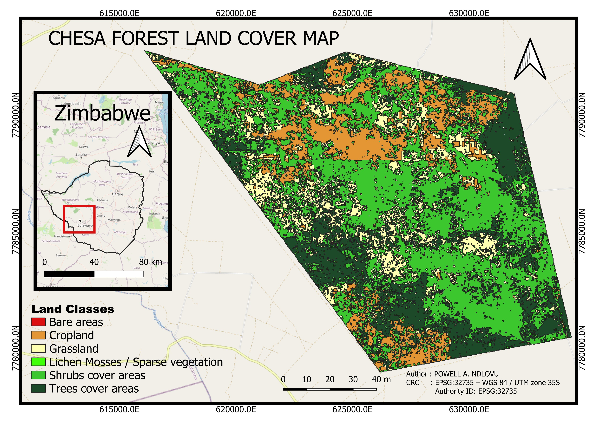

RCMRD Arts & Maps Competition 2026 · Zimbabwe
Lines Inside
the Green
A protected boundary is only a line—until evidence gives it a voice.
This evidence-led project examines land-cover pressure, spectral vegetation condition and historical tree-cover loss to direct protection, field verification and restoration action within Chesa State Forest.
The story
The forest is not one colour.
At a distance, Chesa appears as one protected green space. At landscape scale it separates into tree, shrub, grass, crop, sparse and bare classes—each carrying a different management meaning. The project moves from mapped evidence to responsible interpretation and practical restoration recommendations.
Detect pressure
Land-cover classes reveal agriculture, bare ground and vegetation states potentially conflicting with the forest’s protected purpose.
Read condition
Annual mean NDVI and NBR describe relative vegetation vigour and moisture condition during 2025.
Direct action
Restoration priorities translate spatial evidence into protection, monitoring and field-verification decisions.
Interactive evidence
Explore Chesa Forest spatially.
Open the WebGIS to click land-cover areas, examine pressure and restoration attributes, and filter the landscape by land cover, priority, NDVI and NBR categories.
Connection: place this file beside a folder named webgis containing the complete qgis2web export and its index.html.
▲N
0 2 4 km
Land-cover classes · 2025
Tree cover
Shrub cover
Grassland
Cropland
Bare areas
Sparse vegetation
Transparency and reproducibility
Data and Methods
The Chesa Forest boundary defined the analytical extent. The ESA CCI Sentinel-2 Prototype Land Cover 20 m raster for Africa was clipped to this boundary, converted to polygons and dissolved by class. Areas, percentages, spectral condition, detected tree-cover loss and restoration-screening attributes were then calculated. Esri Living Atlas was retained as a complementary visual-reference layer in the WebGIS.
Analysis CRSEPSG:32735
- Name
- WGS 84 / UTM Zone 35S
- Projection
- Universal Transverse Mercator
- Units
- Metres
- Used for
- Area, distance, overlay and zonal analysis
Data sources
Chesa Forest boundaryRCOE/RCMRD Geoportal · study extent and clipping maskInspect source ↗
Analytical land-cover polygonsESA CCI Sentinel-2 Prototype Land Cover 20 m Map of Africa · polygonisation, class areas, percentages and restoration screeningInspect source ↗
Visual land-cover referenceEsri Living Atlas · complementary raster view for visual comparison in the WebGIS; not the source of the analytical polygonsInspect source ↗
NDVI and NBRSentinel-2 SR processed in Google Earth Engine · 2025 annual meansView workflow ↗
Tree-cover lossHansen Global Forest Change v1.13 · baseline and loss, 2001–2025View workflow ↗

From pixels to priorities
Spatial Analysis and Workflow
A reproducible sequence connected recognised spatial sources, satellite indicators and restoration-screening decisions.
Define the landscape
Load the RCOE/RCMRD gazetted boundary, repair geometry and project analysis layers to EPSG:32735.
Prepare land cover
Clip the 2025 categorical raster, preserve classes with nearest-neighbour processing and polygonise the result.
Quantify composition
Dissolve by land-cover class, calculate hectares and express each class as a percentage of the mapped protected landscape.
Measure vegetation condition
Cloud-mask Sentinel-2 images, calculate NDVI and NBR, derive 2025 annual means and apply zonal statistics.
Detect historical loss
Use Hansen tree cover in 2000, apply a ≥30% canopy baseline and summarise detected stand-replacement loss from 2001–2025.
Screen restoration priorities
Assign protection, monitoring, moderate-assessment and high-priority categories according to mapped class and potential pressure.
Publish the WebGIS
Configure interactive popups, filters, visualisations, legend, metric scale and north arrow.
0
Protect
Existing tree cover
1
Monitor
Shrub cover and regeneration
2
Assess
Grassland and sparse vegetation
3
High priority
Cropland and bare land
Evidence
Results
The mapped protected landscape is dominated by shrubs, while cropland and grassland present the most consequential management questions.
Shrub cover occupies 7,285.06 ha. Cropland covers 2,249.11 ha and is the clearest mapped signal of potential agricultural pressure. Grassland covers 2,105.08 ha but requires historical and field evidence before being classified as degraded forest.
112.26 ha≥30% canopy baseline in 2000
→
10.59 haDetected loss by 2025
→
9.44%Of that baseline affected
Spectral vegetation condition, 2025
| Land-cover class | Mean NDVI | Mean NBR | Relative condition |
|---|---|---|---|
| Trees | 0.50 | 0.17 | High |
| Grassland | 0.48 | 0.16 | High |
| Shrubs | 0.47 | 0.14 | Moderate |
| Cropland | 0.43 | 0.11 | Moderate |
| Bare areas | 0.40 | 0.10 | Low |
| Sparse vegetation | 0.35 | 0.03 | Low |
High spectral condition in grassland indicates vigorous vegetation, not healthy forest. Land-cover identity and spectral condition must be interpreted together.
Meaning and uncertainty
Discussion
The evidence exposes a landscape-management conflict but must be interpreted within the ecological and institutional realities of dry woodland.
A protected boundary containing productive land uses
Cropland occupying 15.37% of the mapped boundary is a strong signal of agricultural pressure. Because the analysis does not include tenure or permit records, the result represents potential encroachment requiring verification—not proof of illegal occupation.
Shrub and grass cover are not automatically degradation
Shrub dominance may reflect natural dry-woodland structure, regrowth, fire history, grazing or arrested regeneration. Grassland may be natural, seasonally vigorous or historically cleared. Reforestation without ecological diagnosis could damage native grassland biodiversity or fail where soil, fire and grazing constraints remain unresolved.
Why the forest-loss result is smaller than the mapped forest
Hansen identified only 112.26 ha above the selected 30% canopy threshold in 2000—approximately 0.77% of the full mapped protected landscape. The 10.59 ha loss result therefore describes disturbance within a narrow closed-canopy baseline, not total woodland change across Chesa.
From evidence to governance
The WebGIS is most valuable as a field-prioritisation system. Cropland patches, bare areas, repeated-loss locations and accessible edges can be ranked for inspection. Restoration can then be matched to cause: boundary enforcement, assisted natural regeneration, fire management, erosion control, livelihood engagement or active planting.
From map to intervention
Conclusion and Recommendations
Chesa Forest needs targeted, evidence-led restoration—not blanket tree planting.
The analysis demonstrates that the gazetted forest contains a mosaic of tree, shrub, grass, crop, sparse and bare land. Cropland is the clearest direct land-use pressure, while grassland and shrubland require ecological and historical assessment. The central contribution is a transparent decision-support framework connecting recognised spatial sources to local restoration action.
- Verify priority patches.Inspect cropland, bare land and historical-loss locations using current imagery, official tenure records and field visits.
- Protect before planting.Prioritise remaining tree cover and natural regeneration before committing resources to active planting.
- Diagnose grasslands.Confirm historical woodland, soil condition, fire regime and grazing pressure before proposing reforestation.
- Engage communities.Co-design restoration and livelihood alternatives so interventions address the causes of land-use pressure.
- Match action to cause.Use assisted regeneration, erosion control, fire management, enforcement or active planting according to field evidence.
- Monitor annually.Update land cover, NDVI, NBR, fire occurrence and verification records through the WebGIS.
THE LOCAL ACTION
Make every restored hectare traceable—from evidence, to intervention, to recovery.
Recognition
Acknowledgements
This project is built on shared geographic knowledge, open Earth-observation data and institutions supporting evidence-led environmental action.
For access to the Chesa Forest boundary and for convening the 2026 Arts & Maps Competition.
For the African land-cover classification used to construct the analytical polygons and quantify landscape composition.
For the complementary land-cover visualization retained as a comparison layer in the WebGIS.
For the processing environment supporting Sentinel-2 and Hansen analysis.
For surface-reflectance imagery supporting annual NDVI and NBR.
For the Global Forest Change dataset used to assess detected tree-cover loss.
Whose understanding of Chesa Forest remains essential for interpreting and verifying mapped evidence.